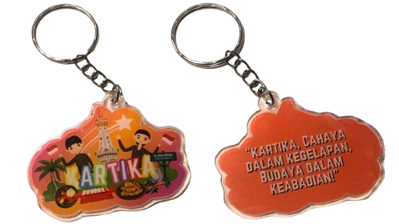

Produk PKN
Bazar Integrated Learning adalah pengalaman yang tak terlupakan, penuh oleh keseruan, kegembiraan,
dan
sedikit rasa gugup. Awalnya, rasa gugup muncul saat membayangkan harus bertemu banyak orang asing.
Namun, dengan senyuman ramah, obrolan santai dengan para pengunjung dan teman teman di samping kami,
membuat perasaan canggung itu perlahan menghilang. Mulai dari menemukan kerajinan unik hingga
mencoba
permainan interaktif, setiap momen menjadi petualangan yang seru. Apa yang semula terasa menegangkan
akhirnya berubah menjadi kesempatan luar biasa untuk berkenalan, menjelajah, dan menciptakan
kenangan
indah. Bazar ini bukan sekadar tempat belanja, tetapi juga perayaan kebersamaan dan kehangatan
komunitas
mengajarkan kami betapa pentingnya kerja sama dan saling mendukung dalam mencapai tujuan bersama.
Awalnya, kami sempat bingung dalam menentukan produk apa yang akan kami buat untuk bazaar
sekolah. Kami ingin menciptakan sesuatu yang menarik, tetapi juga memiliki nilai budaya yang dapat
memperkenalkan kekayaan Indonesia kepada banyak orang. Setelah berdiskusi, akhirnya kami memutuskan
untuk membuat keychain dengan desain khas budaya Indonesia. Keychain ini tidak hanya berfungsi
sebagai aksesori, tetapi juga sebagai media kecil yang mengingatkan kita akan keindahan dan
keberagaman budaya yang ada di Nusantara.
Keychain pertama adalah "Rahayu," yang dalam bahasa Jawa berarti kesejahteraan dan kedamaian. Desain keychain ini mencerminkan budaya Jawa Tengah dengan menampilkan elemen-elemen khas seperti Candi Borobudur sebagai salah satu keajaiban dunia yang melambangkan kejayaan budaya Indonesia, alat musik tradisional seperti gamelan yang menjadi bagian penting dalam seni pertunjukan Jawa, serta ilustrasi makanan khas seperti gudeg yang dikenal sebagai ikon kuliner daerah tersebut. Selain itu, pada desain ini juga terdapat gambar seseorang yang mengenakan pakaian adat Jawa Tengah, lengkap dengan kain batik dan blangkon bagi pria atau kebaya bagi wanita. Di bagian belakang keychain ini tertulis kutipan inspiratif yang berbunyi, "Rahayu, Hiduplah dalam kedamaian dan bawalah harmoni budaya kemanapun kamu melangkah!" Pesan ini mengajak siapa pun yang memilikinya untuk selalu menjaga kedamaian dalam diri serta melestarikan budaya dalam setiap langkah kehidupannya.
Keychain kedua adalah "Kartika," yang memiliki arti cahaya dalam kegelapan. Desain keychain ini menggambarkan budaya Yogyakarta, dengan ikon utama berupa Tugu Jogja yang menjadi simbol sejarah dan semangat perjuangan kota tersebut. Selain itu, terdapat elemen alat musik tradisional seperti angklung atau saron yang melengkapi kesan budaya dalam desainnya. Tidak ketinggalan, ilustrasi makanan khas Yogyakarta seperti bakpia turut dimasukkan untuk memperkuat identitas daerah ini. Sama seperti keychain "Rahayu," desain ini juga menampilkan seseorang yang mengenakan pakaian adat khas Yogyakarta, seperti beskap dan blangkon untuk pria serta kebaya untuk wanita. Pada bagian belakang keychain ini terdapat tulisan, "Kartika, Cahaya dalam kegelapan, Budaya dalam keabadian!" Pesan ini menggambarkan harapan agar budaya Indonesia, khususnya budaya Yogyakarta, tetap bersinar dan tidak akan pernah pudar seiring berjalannya waktu.
Setelah menyelesaikan desain di Canva, kami mencari vendor pembuatan keychain melalui aplikasi Shopee. Kami memilih vendor yang menawarkan kualitas bahan yang baik, seperti akrilik atau plastik tebal, agar keychain yang dihasilkan lebih awet dan tahan lama. Setelah memastikan ukuran, bentuk, dan desain sesuai dengan harapan kami, kami melakukan pemesanan dan menunggu proses produksi selesai. Begitu keychain sudah sampai, kami akan mengecek kualitasnya, memastikan tidak ada cacat, dan kemudian menyiapkannya untuk dijual di bazaar sekolah. Kami berharap keychain ini dapat menarik minat banyak orang serta menjadi souvenir kecil yang bermakna bagi para pembeli.